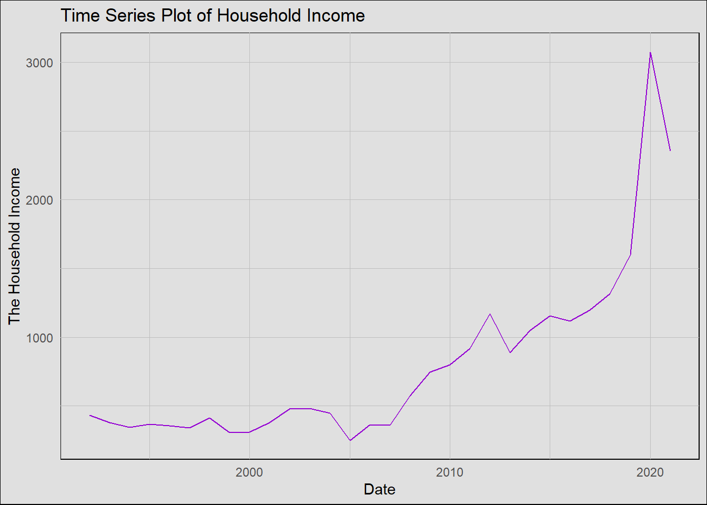
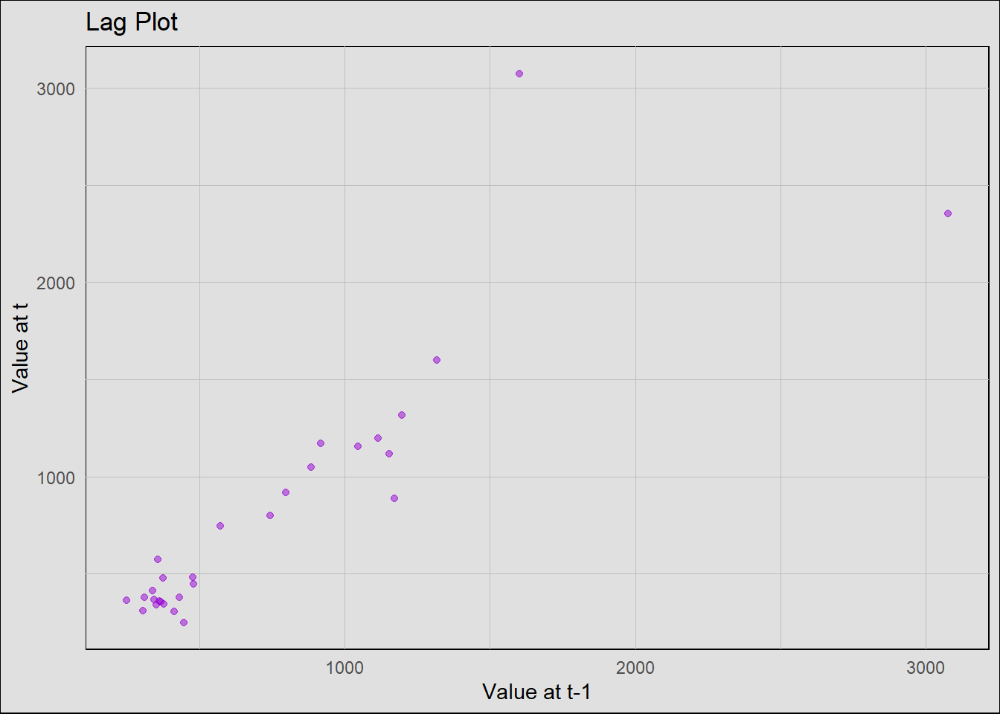
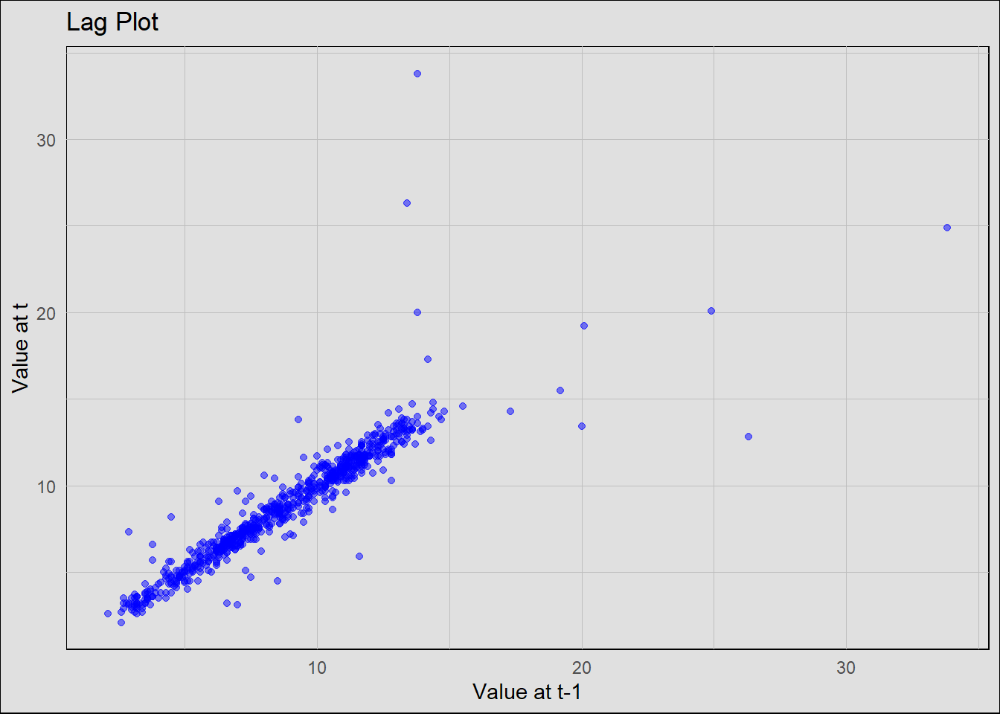
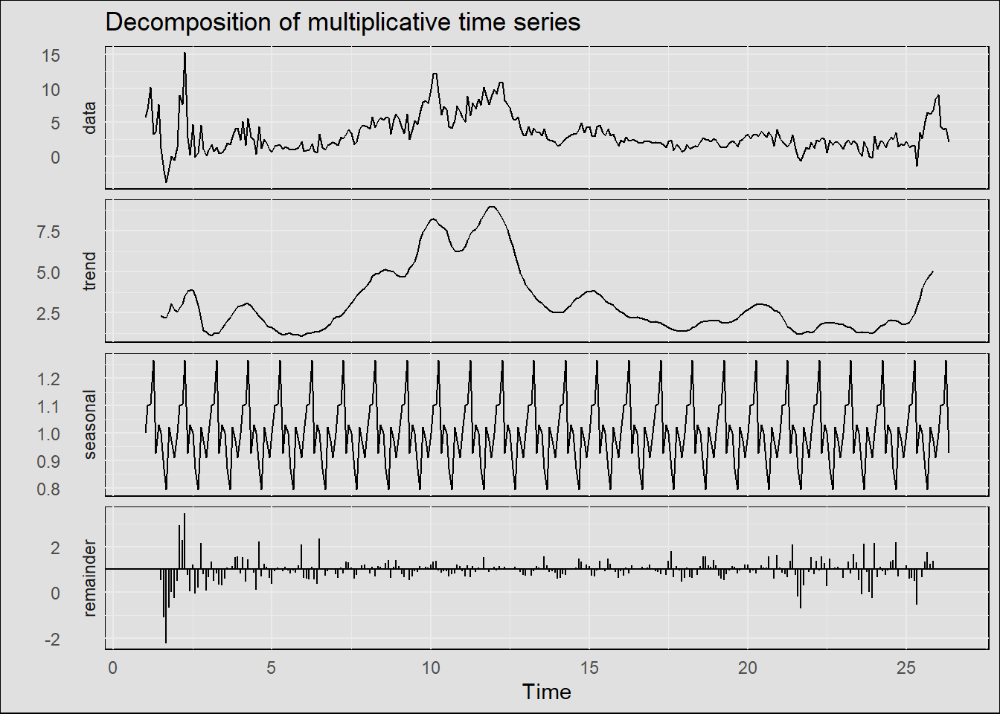

Exploratory Data Analysis
For Exploratory Data Analysis (EDA), we aim to have a deeper understanding of the time series data. This section involves multiple medthods and datasets for us to gain insights and understandings such as decompositions, lag plots, ACF, PACF, ADF tests, detrending, and others. For these methods, we are going to identify correlations, trends, seasonalities, and stationaries. Which can help us to make analysis and apply models in later sections. To be more specific, the lag plots and decomposing methods will allow us to discover dependencies and components. ACF and PACF can help us see the correlations and stationary, and the Augmented Dickey-Fuller Test to empirically probe its stationarity.
The Household Income Data Analysis
As we did in previous section, we start with the household income. In here, we have a basic look about the household income time series.

From the plot, we can visually inspect: Trend: There is clearly positive trend. Seasonality: It seems that it does not contain patterns. Variation: Fluctuations in the data exists. Periodic fluctuations: The fluctuations are randomly presented. multiplicative or additive： Only based on the timeseries plot, I think this follows multiplicative, because it has varying amplitude/frequency.
Then, we want to see if there is any correlations. By utilizing lag plot, we can see if there are any correlations present:
LAG Plot

Based on the lag plot, there’s a positive correlation since the points cluster along a diagonal line from bottom-left to top-right. This shows linearity. However, it could also mean that the dataset is not stationary.
In order to determine if the dataset is stationary. we should use other methods as well. Before doing that, we should first check the trend, seasonality through decompositions.
Decomposition

Now, based on the decomposition plot, we can see that it is correct that the data follows an upwarding trend. However, it seems that there is seasonal pattern involves with flutuations. In addition, it has varying amplitude/frequency. Therefore, I think this follows multiplicative.
Then, we should utilize ACF and PACF to see about the correlation and stationary.
ACF & PACF

From here, we can see that the dataset has a correlation, which also means that it is not stationary. In order to prove this conclusion, we utilize the adf test to ensure the results are the same.
Validation with ADF Test
Warning in adf.test(df$W398RC1A027NBEA): p-value greater than printed p-value
Augmented Dickey-Fuller Test
data: df$W398RC1A027NBEA
Dickey-Fuller = 0.038046, Lag order = 3, p-value = 0.99
alternative hypothesis: stationaryBased on the result, we can see that the p-value is greater than the thershold value, this means that we fail to reject the Null hypothesis. The time series dataset is not stationary.
Then, to explore more, we utilize detrended and log-transformation to see about the patterns
Detrended and Log-transformed


From here, we can see that after detrending, the household income remains fluctuations espectially during 2020 period, which could be the cause of the Covid-19. In addition, Log-transformed time series, in order to remove the hetroscadastisity, we can see that the trend remains. I think the reason is possibly because log-transformation can assuage issues related to non-constant variance, which means that the inherent trend within the data may persist.
The Median House Sale Price Data Analysis
Since our key is to discover the impact of the income and house price, we certainly need to make analysis for the sale price data.
The Time Series

From the plot, the results are the same with the previous section. It has an upwarding trend.
To be more specific, from the plot, we can visually inspect: Trend: There is clearly positive trend. Seasonality: It seems that it does not contain patterns. Variation: Fluctuations in the data exists but not too much. Periodic fluctuations: The fluctuations are presented in 2010 and 2021. multiplicative or additive： Only based on the timeseries plot, I think this follows additive, because it does not have too much variance.
Then, we want to see if there is any correlations. By utilizing lag plot, we can see if there are any correlations present:
Lag Plots
Based on the lag plot, there’s a positive correlation since the points cluster along a diagonal line from bottom-left to top-right. In addition, this aligns with the same conclusion and it has a strong positive correlation. This shows linearity.
Decomposition for the data

Now, based on the decomposition plot, we can see that it is correct that the data follows an upwarding trend. In addition, it has roughly constant amplitude/frequency. Therefore, I think this follows additive.
Then, we should utilize ACF and PACF to see about the correlation and stationary.
ACF and PACF of the data

From here, we can see that the dataset has a correlation, which also means that it is not stationary. In order to prove this conclusion, we utilize the adf test to ensure the results are the same.
ADF Test
Augmented Dickey-Fuller Test
data: df$MSPUS
Dickey-Fuller = -2.6866, Lag order = 6, p-value = 0.287
alternative hypothesis: stationaryBased on the result, we can see that the p-value is greater than the thershold value, this means that we fail to reject the Null hypothesis. The time series dataset is not stationary.
Then, to explore more, we utilize detrended and log-transformation to see about the patterns
Detrended and Log transformation


From here, we can see that after detrending, the sale prices remains fluctuations espectially from 2000 to 2020 period. In addition, Log-transformed time series, in order to remove the hetroscadastisity, we can see that the trend remains. I think the reason is possibly because log-transformation can assuage issues related to non-constant variance, which means that the inherent trend within the data may persist.
The Housing Affordability Index Data Analysis
Then, after we have a basic understanding about the income and sale price. We need to dive into the impact. We utilize the housing affordability index to see the impact of the income and sale price. Let us firt explore the houseing affordability index first.
Time Series Plot for Housing Affordability Index
Code
library(ggplot2)
ggplot(data = df, aes(x = DATE, y = PSAVERT)) +
geom_line(color = "blue") +
labs(title = "Time Series Plot of Housing Affordability Index",
x = "Date",
y = "The Housing Affordability Index") +
theme_minimal() +
theme(panel.background = element_rect(fill = "#E0E0E0"),
panel.grid.major = element_line(color = "grey", size = 0.1),
panel.grid.minor = element_line(color = "grey", size = 0.05),
plot.background = element_rect(fill = "#E0E0E0"))From the plot, we can visually inspect: Trend: It seems that it did not have a consistent trend. From 1960 to 1970, it has upwarding trend. But then it has dewarding trend. And has a huge fluctuations during 2020, Covid period. Seasonality: I think there are small patterns that show seasonality in dataset. Variation: Fluctuations in the data exist. Periodic fluctuations: Spikes or drops at consistent intervals exist. Multiplicative or additive: I think the dataset could follow an additive pattern. Because it seems that it has constant amplitude and frequency although with some fluctuations. In order to prove these, we need to explore more using different methods.
Lag Plot for Houseing Affordability
Code
# Lag plot
lagged_data <- data.frame(value = df$PSAVERT[-1],
lagged_value = df$PSAVERT[-length(df$PSAVERT)])
# Enhanced Lag Plot
ggplot(data = lagged_data, aes(x = lagged_value, y = value)) +
geom_point(color = "blue", alpha = 0.5) +
labs(title = "Lag Plot",
x = "Value at t-1",
y = "Value at t") +
theme_minimal() +
theme(panel.background = element_rect(fill = "#E0E0E0"),
panel.grid.major = element_line(color = "grey", size = 0.1),
panel.grid.minor = element_line(color = "grey", size = 0.05),
plot.background = element_rect(fill = "#E0E0E0"))
Based on the lag plot, there’s a positive correlation since the points cluster along a diagonal line from bottom-left to top-right. This shows linearity. However, it could also mean that the dataset is not stationary.
In order to determine if the dataset is stationary. we should use other methods as well. Before doing that, we should first check the trend, seasonality through decompositions.
Decomposition of the Housing Affordability
Code
#library(ggfortify)
# Decomposition using ggplot2 styling
decomposed <- decompose(ts(df$PSAVERT, frequency=12), type = "additive")
autoplot(decomposed) +
theme_minimal() +
theme(panel.background = element_rect(fill = "#E0E0E0"),
plot.background = element_rect(fill = "#E0E0E0"))Now, based on the decomposition plot, we can see that it is correct that the data did not follow a specific trend. However, it seems that there is seasonal pattern involves with flutuations. In addition, mostly it has constant amplitude/frequency. Therefore, I think this follows additive pattern.
Then, we should utilize ACF and PACF to see about the correlation and stationary.
ACF and PACF Analysis
Code
library(forecast)
# ACF Plot
ggAcf(df$PSAVERT) +
labs(title = "ACF of Housing Affordability Index Time Series") +
theme_minimal() +
theme(panel.background = element_rect(fill = "#E0E0E0"),
plot.background = element_rect(fill = "#E0E0E0"))
Code
# PACF Plot
ggPacf(df$PSAVERT) +
labs(title = "PACF of Housing Affordability Index Time Series") +
theme_minimal() +
theme(panel.background = element_rect(fill = "#E0E0E0"),
plot.background = element_rect(fill = "#E0E0E0"))The ACF plot can help determine if the series is stationary. From here, we can see that the dataset has a correlation, and it is decaying slowly which also means that it is not stationary. In order to prove this conclusion, we utilize the adf test to ensure the results are the same.
ADF Test
Code
library(tseries)
adf.test(df$PSAVERT)
Augmented Dickey-Fuller Test
data: df$PSAVERT
Dickey-Fuller = -3.543, Lag order = 9, p-value = 0.03817
alternative hypothesis: stationaryBased on the ADF test, since the p-value is smaller than the threshold value, we should reject the null hypothesis, which means that the dataset is stationary! However, the value is close to 0.05. In addition, the ADF test is not as reliable as the ACF test. Therefore, since the ACF decays slowly, and it showed strong correlation. This means that, the dataset is not stationary.
Detrened and Log-transformation
Then, to explore more, we utilize detrended and log-transformation to see about the patterns
Code
detrended_data <- data.frame(Date = df$DATE[-1], Detrended = diff(df$PSAVERT))
# Enhanced Detrended Plot
ggplot(data = detrended_data, aes(x = Date, y = Detrended)) +
geom_line(color = "blue") +
labs(title = "Detrended Time Series",
x = "Date",
y = "Detrended Value") +
theme_minimal() +
theme(panel.background = element_rect(fill = "#E0E0E0"),
panel.grid.major = element_line(color = "grey", size = 0.1),
panel.grid.minor = element_line(color = "grey", size = 0.05),
plot.background = element_rect(fill = "#E0E0E0"))
Code
log_transformed_data <- data.frame(Date = df$DATE, LogTransformed = log(df$PSAVERT))
# Enhanced Log-transformed Plot with Custom Background
ggplot(data = log_transformed_data, aes(x = Date, y = LogTransformed)) +
geom_line(color = "blue") +
labs(title = "Log-transformed Time Series of Housing Affordability Index",
x = "Date",
y = "Log-transformed Value") +
theme_minimal() +
theme(panel.background = element_rect(fill = "#E0E0E0"),
panel.grid.major = element_line(color = "grey", size = 0.1),
panel.grid.minor = element_line(color = "grey", size = 0.05),
plot.background = element_rect(fill = "#E0E0E0"))
From here, we can see that after detrending, the household income remains fluctuations espectially during 2020 period, which could be the cause of the Covid-19. In addition, Log-transformed time series, in order to remove the hetroscadastisity, we can see that the trend remains. I think the reason is possibly because log-transformation can assuage issues related to non-constant variance, which means that the inherent trend within the data may persist.
The GDP Exploratory Data Analysis
Then, after making analysis for income, sale price, and houseing affordability. We should have a look at for analyzing the GDP, which can represent the economy as a whole. By analyzing the GDP data, we can have a more generalized view and gain more insights about the patterns, seasonalities, and stationaries.
Time Series Plot of GDP

From the plot, we can visually inspect: Trend: It seems that it did not have a consistent trend. From 1960 to 1980, it has upwarding trend. But then it has dewarding trend. And has a huge fluctuations during 2020, Covid period. Which is similar to the houseing affordability index. I think we can see that there is a positive correlation between GDP and housing affordability index. When GDP gets higher, people can afford a house more easily. Seasonality: I think there are small patterns that show seasonality in dataset. Variation: Fluctuations in the data exist. Periodic fluctuations: Spikes or drops at consistent intervals exist. Multiplicative or additive: I think the dataset could follow a multiplicative pattern. Because it seems that it does not have constant amplitude and frequency. In order to prove these, we need to explore more using different methods.
Lag for GDP

Based on the lag plot, there’s a correlation but not too strong. This shows potential linearity. However, it could also mean that the dataset is not stationary but we can not decide yet.
In order to determine if the dataset is stationary. we should use other methods as well. Before doing that, we should first check the trend, seasonality through decompositions.
Decomposition of the Data

Now, based on the decomposition plot, we can see that it is correct that the data did not follow a specific trend. However, it seems that there is seasonal pattern involves with flutuations. In addition, it has almost constant amplitude/frequency. Therefore, I think this follows multiplicative.
Then, we should utilize ACF and PACF to see about the correlation and stationary.
ACF and PACF

From here, we can see that the acf decays very quickly, which also means that it is stationary. In order to prove this conclusion, we utilize the adf test to ensure the results are the same.
Augmented Dickey-Fuller Test
data: df$A191RI1Q225SBEA
Dickey-Fuller = -3.8947, Lag order = 6, p-value = 0.01466
alternative hypothesis: stationaryBased on the result, we can see that the p-value is smaller than the thershold value, this means that we reject the Null hypothesis. The time series dataset is stationary.
Then, to explore more, we utilize detrended and log-transformation to see about the patterns
Detrended and Log-transformation


The Sale Price Disparity Analysis
Lastly, after analyzing the corresponding numeric datasets, we will explore more about the disparitis by using the Mean Sale price datasets which involves with different regions and states. From here, by making analysis on the pattern and seasonality, it can help us provide with more insights and knowledge in determining the impact of the disparities of the income and sale prices.
Time Series Decomposition Plot
From the decomposition plot, we can visually inspect: Trend: There is no clear trend. Seasonality: It seems that it has seasonal patterns. Variation: Fluctuations in the data exists. Periodic fluctuations: The fluctuations are randomly presented. multiplicative or additive： I think this follows multiplicative, because it has varying amplitude/frequency.
Then, we want to see if there is any correlations. By utilizing lag plot, we can see if there are any correlations present:
Lag Plot
Based on the lag plot, there’s a strong positive correlation since the points cluster along a diagonal line from bottom-left to top-right. This shows linearity. However, it could also mean that the dataset is not stationary.
In order to explore more, we utilize the acf and pacf to check the accuracy.
ACF and PACF plots

From here, we can see that the dataset has a correlation and decays slowly. Howeverm for PACF, it decays dramatically. Therefore, we can say that it is stationary. In order to prove this conclusion, we utilize the adf test to ensure the results are the same.
ADF tests
ADF Statistic: -5.271328121414676p-value: 6.276331376552306e-06Critical Values: 1%: -3.4364647646486093
5%: -2.864239892228526
10%: -2.5682075189699822Based on the result, we can see that the p-value is smaller than the thershold value, this means that we can reject the Null hypothesis. The time series dataset is stationary.
Then, we wish to make analysis for different values to see if they have correlations among each other. A heatmap can also help us to determine the correlations among the sale price, rental price, and homevalue of the dataset.
Correlation heatmap

From here, we can see that there is a strong positive correlation between the Sale price and home value. The higher of the home value, the higher of the sale price. However, the rental price did not have too much correlations with the other two. The possible reason could be the cause of the geographic difference and this could also affect the housing affordability.
In conclusion, in this section, we provide different observations. And these observations underscore the nature of real estate pricing, incomes, GDP changes througout the years as well as the housing affordability. In addition, different patterns and features are found to identify the trend, seasonality, patterns, and correlations. which allow us to have a more understanding about the dataset.
References and Codes
- Codes: Rmd, Python & Qmd
- U.S. Bureau of Economic Analysis, Household saving [W398RC1A027NBEA], retrieved from FRED, Federal Reserve Bank of St. Louis; https://fred.stlouisfed.org/series/W398RC1A027NBEA, September 19, 2023.
- U.S. Census Bureau, Real Median Household Income in the United States [MEHOINUSA672N], retrieved from FRED, Federal Reserve Bank of St. Louis; https://fred.stlouisfed.org/series/MEHOINUSA672N, September 19, 2023.
- U.S. Bureau of Economic Analysis, Gross Domestic Product: Implicit Price Deflator [A191RI1Q225SBEA], retrieved from FRED, Federal Reserve Bank of St. Louis; https://fred.stlouisfed.org/series/A191RI1Q225SBEA, September 18, 2023.
- Zillow Group. Accessed April 19, 2023. “Zillow Research Data.” https://www.zillow.com/research/data/.